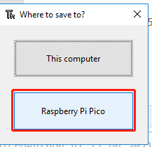

Note
Hello, welcome to the SunFounder Raspberry Pi & Arduino & ESP32 Enthusiasts Community on Facebook! Dive deeper into Raspberry Pi, Arduino, and ESP32 with fellow enthusiasts.
Why Join?
Expert Support: Solve post-sale issues and technical challenges with help from our community and team.
Learn & Share: Exchange tips and tutorials to enhance your skills.
Exclusive Previews: Get early access to new product announcements and sneak peeks.
Special Discounts: Enjoy exclusive discounts on our newest products.
Festive Promotions and Giveaways: Take part in giveaways and holiday promotions.
üëâ Ready to explore and create with us? Click [here] and join today!
1.7 Plant Monitor¶
This is a smart watering system, it will detect the current temperature and humidity of the environment and show them on the SunFounder Controller. When you press the pump button on the APP, it will replenish water for the plants. When it reaches a certain position (detected by water level sensor), it will stop pumping automatically.
Build the circuit.
Create a new controller, add the following widgets and change their names.
Run
1.7_ws_plant_monitor.py.Note
Open the
1.7_ws_plant_monitor.pyfile under the path ofeuler-kit/esp8266.Don’t forget to click on the “MicroPython (Raspberry Pi Pico)” interpreter in the bottom right corner.
For detailed tutorials, please refer to Open and Run Code Directly.
Each time you rerun the code, you need to connect your device’s Wi-Fi to
my_esp8266, then turn on SunFounder Controller and reconnect.After clicking the Run/Stop button in the upper right corner. You will see the current temperature, humidity and water level value on the SunFounder controller. When you press the pump button on the APP, it will replenish water for the plants.
{kind=link}
Note
If the motor is still spinning after you click the Stop button, you need to reset the RUN pin on the Pico with a wire to GND at this time, and then unplug this wire to run the code again.
This is because the motor is operating with too much current, which may cause the Pico to disconnect from the computer.

How it works?
def on_receive(data):
# input
# show dht11 message
try:
sensor.measure()
value = sensor.temperature
ws.send_dict['G'] = value
value = sensor.humidity
ws.send_dict['H'] = value
except:
pass
# show water level sensor message
value = water_sensor.read_u16()
ws.send_dict['P'] = value
# output
# start pumping
if 'M' in data.keys() and data['M'] is True and value<15000:
motor1A.high()
motor2A.low()
# stop pumping
if value>=15000 or 'M' in data.keys() and data['M'] is False:
motor1A.low()
motor2A.low()
ws.on_receive = on_receive
Here, the on_receive() function can be divided into 3 parts.
start pumping: When the button in area G is pressed, let the pump start working.
show dht11 message: Show the temperature and humidity on the widgets in area C and area B respectively.
show water level sensor message: The water level message is displayed on the widget in area P. When the water level message is greater than 10000, let the pump stop working.
Learn More
If you want Pico to run this 1.7_ws_plant_monitor.py file automatically after booting, refer to the following steps.
Open the
1.7_ws_plant_monitor.pyfile under the path ofeuler-kit/esp8266, then click File -> Save as.Select Raspberry Pi Pico.

Set it name to
main.py, this way the Raspberry Pi Pico will run this code automatically.